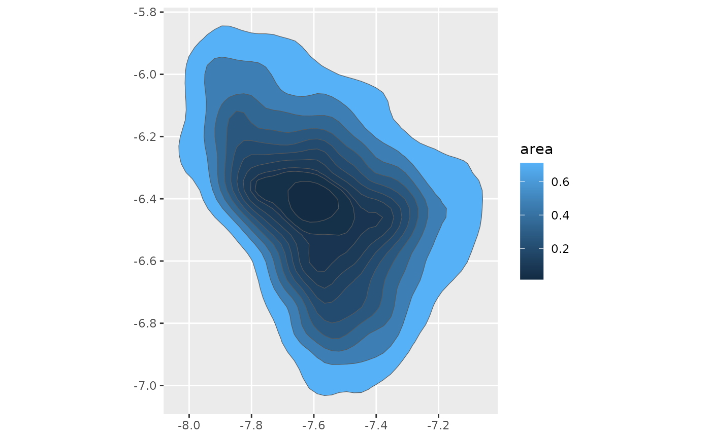

A convenience function to get just the areas of density polygons.
Usage
density_area(
x,
y,
probs = 0.5,
as_sf = FALSE,
as_list = FALSE,
range_mult = 0.25,
rangex = NULL,
rangey = NULL,
...
)Arguments
- x, y
Numeric data dimensions
- probs
Probabilities to compute density polygons for
- as_sf
Should the returned values be sf::sf? Defaults to
FALSE.- as_list
Should the returned value be a list? Defaults to
TRUEto work well with tidyverse list columns- range_mult
A multiplier to the range of
xandyacross which the probability density will be estimated.- rangex, rangey
Custom ranges across
xandyranges across which the probability density will be estimated.- ...
Additional arguments to be passed to
ggdensity::get_hdr()
Value
A list of data frames, if as_list=TRUE, or just a data frame,
if as_list=FALSE.
Data frame output
If as_sf=FALSE, the data frame has the following columns:
- level_id
An integer id for each probability level
- prob
The probability level (originally passed to
probs)- area
The area of the HDR polygon
sf output
If as_sf=TRUE, the data frame has the following columns:
- level_id
An integer id for each probability level
- prob
The probability level (originally passed to
probs)- geometry
The
sf::st_polygon()of the HDR- area
The area of the HDR polygon
Details
If both rangex and rangey are defined, range_mult will be disregarded.
If only one or the other of rangex and rangey are defined, range_mult
will be used to produce the range of the undefined one.
Examples
library(densityarea)
library(dplyr)
#>
#> Attaching package: ‘dplyr’
#> The following objects are masked from ‘package:stats’:
#>
#> filter, lag
#> The following objects are masked from ‘package:base’:
#>
#> intersect, setdiff, setequal, union
library(sf)
#> Linking to GEOS 3.12.1, GDAL 3.8.4, PROJ 9.4.0; sf_use_s2() is TRUE
ggplot2_inst <- require(ggplot2)
#> Loading required package: ggplot2
# basic usage
set.seed(10)
x <- rnorm(100)
y <- rnorm(100)
density_area(x,
y,
probs = ppoints(50)) ->
poly_areas_df
head(poly_areas_df)
#> # A tibble: 6 × 3
#> # Groups: level_id [6]
#> level_id prob area
#> <int> <dbl> <dbl>
#> 1 1 0.01 0.0759
#> 2 2 0.03 0.237
#> 3 3 0.05 0.373
#> 4 4 0.07 0.547
#> 5 5 0.09 0.703
#> 6 6 0.11 0.869
# Plotting the relationship between probability level and area
if(ggplot2_inst){
ggplot(poly_areas_df,
aes(prob, area)) +
geom_line()
}
# Tidyverse usage
data(s01)
## Data preprocessing
s01 |>
mutate(log_F2 = -log(F2),
log_F1 = -log(F1)) ->
s01
### Data frame output
s01 |>
group_by(name) |>
reframe(density_area(log_F2,
log_F1,
probs = ppoints(10))) ->
s01_areas_df
if(ggplot2_inst){
s01_areas_df |>
ggplot(aes(prob, area)) +
geom_line()
}
### Including sf output
s01 |>
group_by(name) |>
reframe(density_area(log_F2,
log_F1,
probs = ppoints(10),
as_sf = TRUE)) |>
st_sf() ->
s01_areas_sf
if(ggplot2_inst){
s01_areas_sf |>
arrange(desc(prob)) |>
ggplot() +
geom_sf(aes(fill = area))
}
